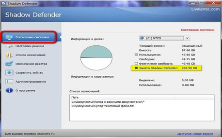

SHADOW DEFENDER DASTURINI ISHLASH PRINTSIPLARINI O’RGANISH, DASTURIY TA’MINOT XAVFSIZLIGINI BAJARILISH PRINTSIPLARI.
Ishdan maqsad: Shadow Defender dasturini ishlash, dasturiy ta’minot xavfsizligini bajarilish printsiplarini o’rganish.
Nazariy ma`lumot
Shadow Defender – bu dastur Operatsion Tizimni soya rejimida ishga tushiruvchi vazifasini bajarib, bu rejimda barcha bajarilgan amallar keying windows OT qayta ishga tushurilgunga qadar qattiq diskda saqlanib turadi. Tizim qayta ishga tushirilgandan so’ng esa barcha o’zgarishlar o’chib ketadi. Soya rejimi o’chirilganidan so’ng tizim fiksirlangan holatiga qaytadi.
“Soya rejimi” Windowsda – asosan kompyuterdan begona odam yoki yosh bola foydalanganda yoki Internetga kirganda zararkunanda dasturlarni bexosdan tizimga tushib qolishini oldini oladi. Tizimda ishonchsiz manbadan olingan dasturlarni sinab ko’rish va tizim sozlanmalarini o’zgartirish kabi amallarni bajarganda zarar keltirishini oldini olishga ham yordam beradi.
Soya rejimida bajarilgan amallar va o’zgartirishlar tizim qayta ishga tushirilganda o’chib ketadi bu esa soya rejimida ishlash mobaynida tizimga tushgan viruslar, troyan dasturlar, tizim sozlanmalari o’zgartirilgan holatlari daslabki holatiga qaytadi.
Shadow defender “Soya rejimi” himoyalovchi rejim ham deb ataladi. Bu dastur ishlash prinsipidan kelib chiqgan holda “Himoyalovchi soya” deb ham ataladi. Soya rejimida ishlash jarayonida kompyuter turli xil zararlardan himoyalangan holatda bo’ladi.
1-rasm. Qattiq disk holati
Shadow defender interfeysi juda qulay hisoblanib, qattiq disk haqidagi ma’lumotlar raqamlar bilan aniq qilib yozilib qo’yilgan. Agar qattiq disk hajmi to’lib qolgan bo’lsa birdan e’tiborni qaratish uchun qulay hisoblanadi.
«Админстрирование» bo’limida biz dastur sozlanmalari va funksiyalarini tanlashimiz mumkin. Dasturni Windows OT avtozagruzkasidan o’chirib qo’ysa ham bo’ladi.
2-rasm. «Админстрирование» bo`limi sozlanmalari
«Список исключений» bo’limida biz alohida fayllarni, kataloglarni yoki butun bir local diskni tanlasak, ushbu fayl, katalog yoki local disk xavfsiz rejimda (soya rejimida) amal qiladi.
Soya rejimidan chiqganimizdan so’ng qattiq diskda o’zgartirilgan ma’lumotlar saqlanmaydi va disk avvalgi holatiga qaytadi.
Muhim holat: taqiqlanganlar ro’yxatiga fayl va papkalarni xavfsiz rejimni yoqishdan oldin kiritilgan bo’lishi kerak.
Fayl yoki papkani taqiqlanganlar ro’yxatiga kiritish uchun “Fayl” yoki “Papka” ga bosamiz va provodnikdan tanlaymiz.
3-rasm. Taqiqlanganlar ro`yxati oynasi
So’ng «Применить» ni bosamiz.

3.1-rasm. Taqiqlanganlar ro’yxat oynasi
Endi bu fayl yoki papkalar himoyalangan holatga o’tdi.
Taqiqlanganlar ro’yxatidan fayl yoki papkani o’chirish uchun Удалить knopkasini bosamiz.
4-rasm. Taqiqlanganlar ro`yxatidan o`chirish oynasi
Taqiqlanganlar ro’yxatida yana Registrlar uchun ham qo’llash mumkin.
5-rasm. Taqiqlanganlar ro`yxatida registrlardan foydalanish
Agar taqiqlanganlar ro’yxatiga xavfsiz rejimida ishlash mobaynida fayl yoki papka qo’shish kerak bo’lib qoladigan bo'lsa «Сохранить сейчас» bo’limidan foydalanamiz.
Xavfsiz rejimini ishga tushurish uchun biz «Настройки режима» bo’limidan amalga oshiramiz. Bu yerda biz diskni tanlaymiz «Защищённый режим» knopkasini bosamiz.
6-rasm. «Сохранить сейчас» bo`limi oynasi
7-rasm. Rejim sozlanmalari oynasi
Dastur bizga 2 xil xavfsiz rejimini taklif etadi. Birinchi rejim-tizim qayta ishga tushirilgandan so’ng ham rejim aktiv holatda qolaveradi. Ikkinchi rejim-bunda esa tizim qayta ishga tushirilgandan so’ng esa rejimdan chiqib ketadi.
Bizga kerakli rejimni tanlaymiz va «Ок» ni bosamiz.
8-rasm. Rejim turini tanlash oynasi
Bo’ldi tizim xavfsiz rejimida ishga tushadi va ishchi stoli tepa qismida bu belgi paydo bo’ladi.
9-rasm. Ischi stol
Endi esa Windows OT da bo’ladigan barcha o’zgartirishlar tizim qayta ishga tushirilgunga qadar xavfsiz holatda bo’ladi. Tizim qayta ishga tushirilgandan so’ng tizim dastlabki holatiga qaytadi.
Endi xavfsiz rejimidan chiqish uchun esa «Отключить всю защиту» knopkasini bosamiz.
10-rasm. Rejim holatini tanlab o`chirish oynasi
Topshiriq:
Amaliy ishning ketma-ketligi bilan tanishing;
Amaliy ish bo'yicha tahlil o‘tkazing va hisobot tayyorlang.
Test savollariga tayyorlaning.
Shadow Defender dasturining dasturiy ta’minot xavfsizligini ta’minlashda qolgan analoglardan ustunlik tomonlarining tahlilini o’tkazing
Nazorat savollari:
Shadow Defender dasturi qaysi operatsion tizim uchun ishlab chiqarilgan?
Shadow Defender dasturida “soya rejimining ” vazifasi nimadan iborat?
Shadow Defender dasturining necha xil xavsizlik rejimi mavjud?